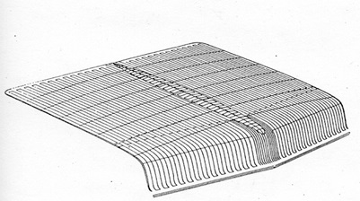
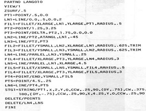
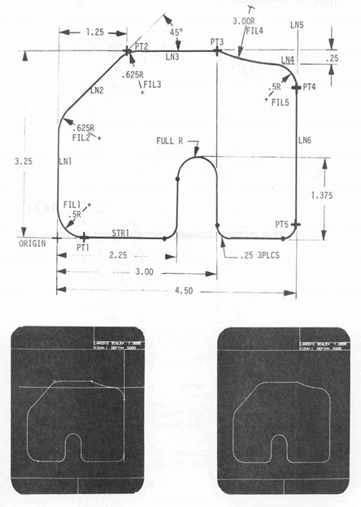
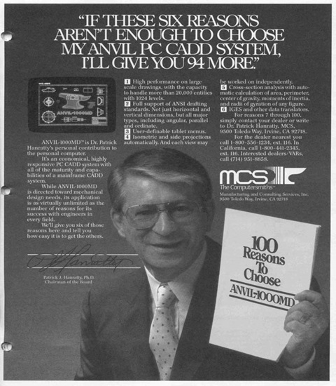

第15章：Patrick Hanratty与Manufacturing & Consulting Services
没有CAD / CAM行业的历史是完整的，没有对帕特里克·汉拉蒂博士和他的软件公司制造和咨询服务公司（MCS）进行深度讨论。在许多圈子中，汉拉蒂被认为是“CAD / CAM之父”。这种认可是因为他在MCS和前身公司Integrated Computer Systems开发的软件被近十家公司用作其商业产品的基础。除了授权其软件用于转售外，MCS在多年的时间里还直接向最终用户销售这些工具，其中一些忠实用户至今仍在使用。在CAD / CAM行业的所有早期开发人员中，汉拉蒂是为数不多的在21世纪仍在个人书写软件的人之一。
汉拉蒂在圣地亚哥地区长大，像许多同辈人一样，在高中毕业后很快就去打朝鲜战争了。在从朝鲜撤退之后的一年多时间里，他参加了康复测试，发现自己很适合在科学环境中工作。没有大学学位，他在1954年被圣迭戈的康威尔（Convair）聘用为程序员，从事IBM 650和UNIVAC 1103计算机的工作。其中一个典型项目是计算在各种负载条件下飞机起飞所需的距离。
汉拉蒂称自己总是不安分，1956年他回应了通用电气在凤凰城地区招聘程序员的广告。汉拉蒂在GE工作期间的早期项目之一是开发早期的数控软件包PRONTO（Programme for Numerical Tooling Operations）。它基本上接受NC专家输入到编码表上的加工语句，并在这些语句被打孔到卡片上并产生机床控制器所需的实际数字指令后，在批处理模式下处理这些语句。 PRONTO是针对通用电气在其纽约州斯凯内克塔迪设施使用的Kearney＆Trecker Milwaukee 3机床开发的点对点NC软件包。大约在同一时间开发的另一个程序是通用电气机床主任或MTD。该程序处理有限的2.5轴轮廓加工操作。它可以在不同的Z水平加工零件，但不能加工复杂的表面。刀具运动以绝对坐标术语或符号方式定义。例如，零件程序员可以让软件确定直线与圆弧的交点使用符号名称来表示切点。在20世纪50年代末，NC加工是一种相对较新的制造技术，这是最早促进编程这些机器的程序之一。这些项目显然引发了汉拉蒂对NC机床控制的终身兴趣。
汉拉蒂（Hanratty）最初工作的组织最终成为GE的过程控制部门。（十年后，我会密切与这个GE组织合作，为阿鲁巴的Lago石油精炼厂开发石油产品运动控制系统。）GE将汉拉蒂派往宾夕法尼亚西部，在公司安装几个钢铁厂的控制系统。他为Jones&Laughlin和Bethlehem Steel经营的轧钢厂的系统工作。在此期间，他完成了来自亚利桑那州立大学的数学学士学位。
通用汽车的数控软件开发
1962年底，汉拉蒂离开GE，去密歇根州为通用汽车公司工作。他说，那是一个“好工作，好工资和好福利”的地方。但他也发现，通用汽车公司很难推广新想法。
我以及其他许多人所犯的一个误解是，Pat Hanratty 在 DAC-1的开发中发挥了重要作用，需要解决。尽管他从1962年末到1966年末在通用汽车研究实验室工作，但DAC-1更像是一个软件开发平台，他显然使用过，而不是他密切参与的项目。 DAC-1参与者发表的论文中都没有提到他的名字。然而，与DAC-1项目团队一起工作的一个副产品是，他与该项目的几名程序员建立了关系，其中包括Jerry Devere和Art Larsen，后来他还与他们一起工作了很多年。（有关DAC-1的详细描述，请参见第3章。）
汉拉蒂在通用汽车公司的工作主要集中在数控软件上。他的职位是数控研究企业协调员。他主要使用的平台是带DAC-1显示控制台的7094机器，再接着是IBM System 360计算机和2250显示器。汉拉蒂认为，360最重要的创新是IBM采用了8位码，取代了早期的6位码，使程序员可以使用64个不同的字母数字和特殊字符。
在加入通用汽车不久后，汉拉蒂发现该公司在生产1964年凯迪拉克汽车的行李箱工具时出现了问题。他自告奋勇为NC机器制作模具的控制磁带。他的老板认为在六周的时间内办不到，但汉拉蒂相信自己能够做到。这成为了一个争议点（实际上很难想象帕特·汉拉蒂会接受任何人的命令）。为了获得授权继续进行，汉拉蒂写了一封未标明日期的辞职信，并声明如果失败，信将生效。尽管当时他还在攻读系统工程硕士学位，最终也从西海岸大学获得了该学位，但他仍然成功按时完成了任务。不仅完成得很及时，而且造型工作室对所生产的工具非常满意。这封信不需要写日期。行李箱盖的刀路如图15.1所示。（这张图片还在IEEE计算史学报1994年第16卷第3期的一篇文章中被Fred Krull，DAC-I项目的负责人之一所重现）
接下来几年里，汉拉蒂集中致力于将复杂曲面转化为数控机床的工具路径数据。正如他所描述的那样，这些曲面由5次多项式描述，这使得加工曲面边缘特别困难。曲面数据是使用IBM开发的扫描仪从造型师的粘土模型上提取的。在获得扫描数据后，汉拉蒂开发了定义实际部件的方法。

回到加州
现在是回到加州的时候了。 1967年初，汉拉蒂开始为Astronautics Corporation工作，帮助他们开发基于计算机的设计技术。 有一段时间，他继续以咨询顾问的身份为GM从事表面加工技术等领域的工作。 一个特定的项目涉及加工第一个可折叠转向柱的齿轮。 这种双重职责持续了大约六个月。
最终，汉拉蒂雇用了杰里·德弗（Jerry Devere）、阿特·拉森（Art Larsen）和几个其他通用汽车（GM）的员工，利用一台带有Tasker刷新矢量图形终端的Xerox Sigma 7计算机，为机械和电气设计开发软件。在此工作进行期间，太空航电公司被麦克唐纳·道格拉斯公司收购，后者正在开发自己的内部CAD系统CADD。据汉拉蒂称，这导致了两个团队之间的冲突，最终太空航电公司的工作开始逐渐减少。
开发自己的CAD系统
汉拉蒂在大公司开发CAD/CAM技术方面投入了八年时间。到了1969年底，他决定开始创建自己的软件，而不必与公司的惯性作斗争。1970年1月2日，他与来自麦克唐纳·道格拉斯公司的七个人，包括德弗和拉森，并准备了100,000美元，开始了集成计算机系统公司（Integrated Computer Systems）。他们计划使用由拉森编写的类似于Algol的编程语言TPL在REDCOR微型计算机上开发完整的CAD/CAM解决方案。到了那年秋天，他们已经准备好在芝加哥举行的1970年国际机床展上展示该软件。
ICS演示了从设计到草图和NC磁带准备的整个周期。技术上，该软件受到了良好的反响，但潜在客户反对使用TPL。尽管它可能是一个很好的编程语言，但实际上没有什么追随者。作为一个有趣的侧面，13年后，Applicon在一种专有版本的PL-1中编程BRAVO!时遇到了同样的问题。这证明了用户，尤其是大公司的用户，更关心标准技术而不是试图推出潜在更好的专有技术。
ICS软件产品被称为INTERAPT。该名称显然源于其交互功能和重点是机床控制，因为APT是一种NC编程语言，代表着自动编程工具。
INTERAPT包含许多模块，包括：
欧几里得 - 基本的三维几何构造，可以使用交互式图形或批处理语言。
扩展欧几里得 - 高级的三维几何构造，涵盖APT NC编程语言支持的标准表面。
ICAD-M – 机械交互式计算机辅助绘图
ICAD-IC – 集成电路交互式计算机辅助绘图
ICAM-2+ – 二维深度交互式计算机辅助加工
ICAM-3 – 三维交互式计算机辅助加工（此模块还支持五轴机床）。
DISECT – 动态交互截面属性。
由于它比Matra Datavision成立早九年，因此没有与该公司使用EUCLID品牌产生冲突。
INTERAPT有许多功能会出现在Hanratty的设计和数控软件产品的后续版本中，包括ADAM、AD-2000和ANVIL。一个始终如一的主题是能够通过专门的APT类语言来驱动软件。由于交互式图形终端在1970年代非常昂贵，因此脱机设计零件、将几何定义数据输入磁卡，然后让计算机以批处理的方式创建零件模型被认为是一种有效的替代方案。在INTERAPT中，这种功能被简称为EUCLID语言选项。随着时间的推移，它发展成为ADAM中所描述的GRIP（图形交互编程语言），今天被称为GRAPL-IV。图15.2展示了一个EUCLID零件程序的示例，而图15.3展示了生成的零件的外观。


早在1971年，当ICS的客户很少时，ICS迅速用完了钱。这是在风投资本公司像明天就没有了一样洒下数百万美元的日子之前。TRW联系了汉拉蒂有关购买ICS的事情，但他认为这个过程将需要太长时间，而在收购完成之前该公司将没有钱可用。一位新玩家Systems Science and Software（简称S3）挽救了局面。
随着S3的到来，出现了一个新的玩家，David Albert博士，他在从国家安全局工作和在天主教大学获得博士学位后不久就加入了该公司。当Albert为新墨西哥州阿尔布克雷基的Sandia实验室做一些咨询工作并将一些电子设计开发工作引导到ICS时。当ICS开始用完钱时，Albert让S3有兴趣收购该公司。这笔交易在1971年中期左右完成。
S3向所有ICS员工提供相同的薪水，他们在公司里呆着。绝大多数人接受了这个提议。假设汉拉蒂也会留下来成为未来软件开发背后的引导力量。然而事实并非如此。当S3接管时，汉拉蒂只是决定不去上班了。他在那天早上打了电话并辞职了。
MCS成立了
数个月后，于1971年11月1日，汉拉蒂在加利福尼亚州科斯塔梅萨成立了“制造和咨询服务公司”，并开始开发一个新的与机器无关的软件版本，即一开始在ICS开始的软件。这很快被称为ADAM，是汉拉蒂的想法，是设计和制造软件包的新一代中的第一个。 ADAM还代表自动制图和加工。该软件最初是为16位REDCOR RC-70小型计算机编写的，该计算机于1969年3月首次发送给客户。 REDCOR是总部位于加利福尼亚州卡诺加公园的小型计算机制造商。
该软件使用了一种称为Computek终端的设备，它构建在Tektronix 4010存储管显示器的OEM版本周围。 MCS的最初业务策略是开发诸如ADAM之类的软件，并将其许可给其他公司以销售给最终用户。通过许可软件，这些公司将被要求提供培训和技术支持，从而减轻MCS的责任。第一个这样的许可证持有人是Gerber Scientific，它使用ADAM来跳跃进入以CAM为重点的CAD市场。
接着又推出了一种许可证给Dynamic Microprocessor Implementation和United Computing公司，用于转售最终用户使用。
United Computing是一家早期的NC软件公司，拥有一个批处理产品叫做UNIAPT。该公司打算使用ADAM作为提供交互版本软件的基础。这最终导致在被麦克唐纳·道格拉斯自动化（McAuto）收购之前，初步开发了Unigraphics软件包。除了Gerber和United Computing，MCS还向一些最终用户销售ADAM。Hanratty向我提供了Xerox在加利福尼亚州艾尔塞贡多（很可能是前科学数据系统设施）印刷的1972年ADAM菜单的副本。
S3认为ADAM基本上是它收购ICS时所获得的软件。因此，S3发起了一场诉讼，以防止MCS销售或授权更多的ADAM副本。MCS随后以自己的诉讼进行反击。可能有些上述交易实际上是在诉讼之后发生的。
情况发生了很大变化，当S3最初作为圣地亚哥的技术咨询组织成立时，被一个对开发CAD软件没有太大兴趣的大型零售组织收购。它更感兴趣的是利用S3的人才来开发零售交易技术。该公司的CAD开发部分被出售给了Computervision，后者打算将S3技术作为CADDS-3软件的基础。Albert，Devere和其他约十几名员工成为Computervision的员工，其中大多数人留在圣地亚哥。
随着S3 CAD业务的转移，Computervision继承了针对MCS的诉讼。据Albert称，Computervision希望尽快解决这起案件，但也希望尽量减少与MCS的直接竞争。Hanratty到今天仍认为，ADAM是一个从头开始重写的独立软件包。按照他的说法，MCS的ADAM代码大部分是由该新公司的第一位全职员工John Tangney编写的。1976年我第一次见到Pat Hanratty时，他仍然对S3/Computervision诉讼感到愤怒，而在最近的一次采访中，他似乎已经变得平静了。为进行一场庭审的准备工作，需要进行一些证言。Hanratty与律师Gar Schallenberger合作，亲自参加了这些证言，其目的是证明MCS代码与ICS代码不同。
根据汉拉蒂的说法，计算机视觉的总裁马蒂·艾伦（Marty Allen）给他打电话并提出和解。根据1973年确定的协议，计算机视觉以非独家方式许可ADAM，同意支付Hanratty一年10,000美元的咨询费以及MCS的法律费用。尚存有一些困惑的问题之一是，和解是否限制了MCS在CAD领域的工作时限。Hanratty利用这段时间在加州大学尔湾分校获得了信息和计算机科学博士学位。
AD-2000相比ADAM提供了大幅改进
在与计算机视觉的协议达成后，Hanratty将MCS迁至加州尔湾。ADAM的用户界面由22个菜单组成，每个菜单包含5到14个命令，涵盖了三维设计、绘图和NC的全部范围。该软件提供了171个不同的命令选择。即使在这个早期阶段，MCS声称能够处理航空航天工业中必不可少的5轴加工。根据菜单列表，该软件包处理了旋转表面、制表圆柱体、可展开表面、规则表面和曲面网格等。还提供了固定和可变半径的圆角。
就在迁移到尔湾的同时，Hanratty开始开发下一代机械设计和制造软件AD-2000。与ADAM相比，它拥有大量增加的命令，并针对开始出现的新一代32位小型计算机编写。但是，该软件仍可以在16位小型计算机上运行，例如DEC PDP-11。
AD-2000最初发布于1976年，具有42个不同的菜单，共计405个命令。与ADAM相比，它具有重大的功能增强：
- 交互式软件开发能力，称为GRAPL（Graphical Associated Programming Language，后改为Graphical Application Programming Language），使用户能够创建专门的应用程序。
- 扩展的曲面建模和实体对象的初始实现。
- 扩展草图功能
- 包括质量属性的2D和3D分析
虽然AD-2000假定提供了广泛的功能能力，但存在一个问题 - 其中一些功能根本无法使用。至少在早期版本中未实现405个命令中的全部。在某些情况下，选择一个命令时，屏幕上会显示一个消息，只是说明该功能不可用。
当时被问及此问题时，Hanratty的回答是，菜单结构已经建立，以反映计划中的开发以及现有的功能。在MCS软件的后续版本中，将更清楚地了解仍在开发中的内容。
毫无疑问，AD-2000是建立Hanratty在CAD行业声誉的重要因素。在很大程度上，MCS的重点仍然是向其他公司授权软件进行再销售。AD-2000被授权给Control Data Corporation，其作为CD-3000销售，被授权给Kongsberg，其作为CDM-300销售，被授权给Tektronix，其作为DDN销售，被授权给Auto-trol Technology，其最初重新打包为GS-2000，后来作为Series 7000销售。显然， Gerber和United Computing（可能是在后者被McAuto收购后）也从ADAM升级到AD-2000。此外，MCS还将软件授权给了NASA，让其在IPAD（宇航设计综合程序）计划下向某些承包商提供。在更小的程度上，AD2000被出售给几家大型制造公司进行内部使用，包括卡特彼勒。
MCS成功向终端用户直接出售AD-2000的一个领域是造船业。Newport News Shipbuilding，Bath Iron Works和Todd Shipyards都使用该软件定义了切割路径。
个人对AD-2000的经验
我曾经参与了两家授权AD-2000的公司，Tektronix和Auto-trol Technology。 Tektronix于1978年与MCS签订了许可协议。该软件旨在成为最初称为Dimension系列但后来简称为DDN（设计，草绘和NC）的核心产品。我的角色是管理该业务的现场销售和支持。花费了将近一年的时间将MCS软件与新的Tektronix图形硬件进行接口对接。
汉拉提觉得工作可以在更短的时间内完成，但是Tektronix团队在约翰·罗利的领导下似乎想要在最小的系统上开发软件。他非常喜欢Tektronix添加到其4014存储管显示器中的新的写入功能。存储管显示器的基本特点是当任何东西被删除或移动时，整个图像必须被重新绘制。写入功能使得可以使用动态菜单而无需重新生成整个显示的图像。它还允许在终端上进行有限量的图像拖动。
Tektronix在1979年6月向Bethlehem Steel销售了其第一个DDN系统。接着是来自Reynolds Metals的大订单以及来自Pratt＆Whitney的较小订单。其他客户包括Eastman Kodak和Aerojet General。Tektronix的AD-2000版本开始直接面对MCS的竞争是其销售的主要问题之一。Tektronix的市场人员从未能够阐明为什么其软件版本优于MCS版本。
就在这个业务开始获得一些真正的动力时，Tektronix在1979年11月决定退出CAD系统业务。虽然汉拉提认为这是公司的一种短视之举，但他还是觉得Tektronix与他进行了良好的协商。目前不清楚Tektronix销售的大部分安装情况如何-Reynolds Metal非常不满，并可能获得了Tektronix的某种形式的赔偿，而Pratt＆Whitney则继续使用Hanratty软件，并与MCS直接打交道。根据1987年1月The Anderson Report上关于MCS的一篇文章，在佛罗里达州西棕榈滩工厂，Pratt＆Whitney被报道已经安装了150个IBM主机使用IBM 5080显示器的MCS软件。如果公司坚持在CAD市场上，这可能是Tektronix业务。
在Auto-trol的经验有些不同。该公司在1979年中期与MCS签订了AD-2000许可协议。如第9章所述，Autotrol当时的主要系统称为AD / 380。它是围绕Sperry Univac V77-600微型计算机构建的，并使用Tektronix存储管图形终端。1979年末，该公司推出了一个先进的图形工作站，名为CC-80，其中包括德州仪器微处理器作为本地控制器。一个AD / 380系统最多可支持12个CC-80工作站。Auto-trol曾试图开发自己的AD / 380机械软件GS-200，但未能成功。
许可AD-2000之后，他们放弃了GS-200项目并开始将MCS软件移植到AD/380和CC-80。大约六个月后，公司交付可交付软件，名为GS-2000。那是我作为产品规划主管加入Auto-trol的时候，尽管在这个角色中，我与GS-2000的开发和营销没有什么关系。我知道开发人员在将其修改与MCS提供的AD-2000的新版本同步方面遇到了严重的问题。最终，Auto-trol认为，一次全额支付许可证而不需要进一步增强是更好的选择。他们在1980年后期向MCS支付了100万美元，而MCS则提供了最新的AD2000源代码，并终止了所有未来的版税支付。
很难说那是好事还是坏事，因为MCS正在开发一种更稳定的软件版本，名为ANVIL-4000。Auto-trol继续销售其软件版本长达15年。它被移植到Digital VAX 11/780，最终到Apollo、Sun和Digital工作站的Series 7000品牌下。随着时间的推移，许多原始AD-2000代码被Auto-trol人员内部开发的新软件所替代，尽管它从未成为公司的主要收入来源。从1990年开始，Auto-trol试图不成功地从头开始开发新的机械设计软件包。
MCS成为真正的软件公司
直到1980年，MCS和Hanratty都致力于开发先进的机械设计和制造软件，这些软件要么被一体化系统公司转售，要么被MCS销售给有技术资源以适应其特定需求的大型组织。特别是，MCS软件被核武器社区相当广泛地使用，在洛斯阿拉莫斯、桑迪亚实验室等地都有安装。他们喜欢AD-2000和随后MCS软件加工复杂表面的能力，并愿意容忍软件的独特性。
1981 年 ANVIL-4000 的推出改变了商业策略，MCS 成为更典型的软件公司，直接向最终用户销售。虽然该公司仍然向像哈里斯公司和 Graphtec 这样的公司许可其软件进行转售，但主要焦点转向了开发直接销售能力。
ANVIL 的名称来自于汉拉蒂的想法，即 MCS 是“计算机铁匠”，为用户提供工具包。铁砧是铁匠的重要工具，因此将软件命名为 ANVIL 并不是一个巨大的飞跃。与 AD-2000 增加许多功能一样，ANVIL-4000 是公司 AD-2000 软件的同等重要升级。相比于 AD2000 的 42 个菜单和 405 个命令，ANVIL-4000 包含 80 个明显不同的菜单和大约 1,080 个命令。这一次，MCS 承认一些命令，例如以英尺和英寸为单位的尺寸、数据图形、与 ANSYS 的有限元界面以及管道设计仍在开发中。周围约在 1986 年左右，当 ANVIL-5000 推出时，其中的一些，例如英尺和英寸尺寸，已经被实施，而其他一些，包括管道设计，从未纳入该软件包。
与 AD-2000 的两个不同之处在于，ANVIL-4000 更加标准化，并具备支持双字节字符的能力。后一项特性使得支持日语和汉语等亚洲语言成为可能。用户必须适应的一个问题是，菜单结构在 AD-2000 和 ANVIL-4000 之间发生了显着变化，需要用户学习旧命令在新菜单上的位置以及学习新功能。即使在创建简单几何图形的菜单上，例如点和线，一些命令也要么被更改了，要么在下级菜单中。总的来说，大多数添加的功能都扩展了已经在 AD-2000 中存在的功能，而不是创建完全新的设计和绘图领域。
根据《The Anderson Report》1982 年 8 月的一篇文章，ANVIL-4000 是完全用 FORTRAN 编写的，旨在运行在字长为 24 位或更大的计算机上。在某些情况下，MCS 也使用 ANVIL-4000L 术语来命名该软件包。虽然文章没有提到该软件当前可用于哪些计算机系统，但它列出了八种不同的制造商的终端受到支持：Tektronix、Megatek、Lexidata、Ramtek、Imlac、Genisco、Vector Automation 和 Vector General。
ANVIL-4000L被分装成五个不同的模块，可以以多种组合方式购买：
- 控制和查看几何图形的基本包（31,000美元）
- 制图（15,000美元）
- 扩展几何图形（28,000美元）
- 数控（26,000美元）
- 分析（7000美元）。
假设如果公司想购买完整套件或多个副本，MCS可能会从这些单独的价格中提供折扣。尽管以今天的标准来看，10.7万美元听起来很高，但实际上在1982年是相当合理的。IBM大型机可以轻松支持12个或更多终端，将软件的价格降至不到1万美元。该软件还可以从MCS租赁，每个月租赁价格为名单价格的5%。目前还不清楚该公司对软件维护收费多少，以及租赁价格是否包括维护和支持。
MCS还提供了一个名为ANVIL-3000D的二维版本软件，旨在用于机械绘图应用。该软件支持广泛的国际制图标准，并包括用户创建自己的标准的功能。除了正投影图，ANVIL-3000D还可用于创建等轴投影图。根据安德森报告文章，该软件包支持IGES，当时是一个相当新的互操作标准，以及与ANVIL-4000L交换文件的能力。
ANVIL-3000D软件仅可以按月租赁，一个或两个终端的租金为1750美元，37个或更多终端的租金高达每月4000美元。 ANVIL-3000D的更有趣特点之一是计算机辅助指导功能，该公司认为这将显著缩短学习该软件所需的时间。这将继续是MCS未来的培训主题。
在1982年，MCS首次尝试销售专门配置用于MCS软件的封装系统和终端。其中一个产品是名为ANVIL-3000的一体化系统。它基于惠普1000F迷你计算机，高分辨率光栅显示器和ANVIL-3000D软件。单个显示终端的价格约为90,000美元，两个显示终端的价格约为105,000美元。此外，MCS还提供了两个专门配置其软件的图形终端。ANVIL-1200 IID系统基于Genisco G-1000单色光栅显示器，分辨率为1000行。它采用Zilog Z8001微处理器，具有320KB的存储器，并支持本地操作功能，如缩放、平移、拖动、旋转、光标跟踪和擦除，以及数字化器支持。这款产品的价格从15,750美元起。最初的介绍价格是18,750美元，但显然不太具有竞争力。
第二个终端是ANVIL-1600 IID，它基于Imlac DYNAGRAPHICS II行刷新显示器和Intel 8086微处理器，具有192KB的存储器。分辨率为2048乘2048。在这两种情况下，用户仍然需要提供主机计算机系统。通过在终端设备中使用微处理器，实现了ANVIL软件的一些交互功能，提高了用户性能。当时，其他供应商如Auto-trol Technology和Computervision也正在采取类似的步骤进行终端硬件。据我所知，MCS并没有销售太多的专业硬件。该业务主要是软件。安德森报告估计，在1982年，MCS的年销售额约为500万美元，所有销售都在其尔湾总部处理。Daratech在其1983年的调查和买家指南中报道说，MCS已同意出售21％的股份给Impell Corporation价值500万美元。
1983年中期，MCS宣布ANVIL-1200 IID终端将由Genisco Computers直接销售，新价格为12,000美元。1983年9月，MCS组织扩大，Tom Yarker晋升为技术副总裁，Ross Stoutenborough晋升为技术开发总监，Morton Chonoles担任国家销售经理。从那时开始，MCS与Digital Equipment、Prime Computer和Data General达成协议，让这些公司转售ANVIL-4000。据我所知，只有Digital做出了任何重要的努力来建立必要的工作人员，并积极推广MCS软件。1984年5月，惠普加入了这个列表，同意在HP 9000系列计算机上提供ANVIL-4000。
1984年5月，惠普收购了MCS的10%股份。据汉拉蒂称，这使得其他卖出他软件的计算机制造商感到不满，并停止了这样做。汉拉蒂很快就感到担忧，因为与此同时，惠普内部的另一个小组正在收购德国的一家软件公司。这后一笔交易导致了惠普产品如ME-10和ME-30以及该公司机械工程部门的建立，最终拆分为CoCreate。
跃入个人电脑领域
1984年底，MCS推出了ANVIL-1000MD，这是ANVIL-4000的二维绘图子集，在IBM PC/AT上实现。最初计划是让IBM在PC/AT推出期间使用该软件包，并随后推广该软件。完整的配置包括一台带有640KB内存、20MB硬盘、软盘、80287数学协处理器、IBM专业图形控制器/彩色图形显示器、B尺寸绘图仪和软件的PC/AT，售价为15,885美元。仅软件售价为2,995美元。尽管ANVIL-1000MD在技术上做得非常好，据汉拉蒂称，在发布时没有错误，但在IBM遇到政治问题。
多年来，IBM一直在销售由洛克希德公司开发的CADAM机械绘图软件，该软件可在公司的大型计算机上运行。显然，IBM的新生PC部门销售低成本替代品的想法让公司的大型计算机部门感到不安，他们成功游说阻止IBM销售ANVIL-1000MD。尽管汉拉蒂公司已准备好了10,000份软件备用，以期望从IBM处获得订单，但就在正式发布计划的前三天，IBM取消了与MCS的合同。
IBM一退场，参与ANVIL-1000MD开发的汤姆·雅克尔问汉拉蒂是否可以接管该软件的市场营销和销售。雅克尔成立了一家名为“Integrated Design Consultants（IDC）”的公司，成功地销售了ANVIL-1000MD。据汉拉蒂称，到了2000年，可能仍然有5000份副本在使用中，MCS经常接到用户打来的电话，询问是否有升级到下文所述的ANVIL EXPRESS的计划。
尽管与Autodesk等供应商提供的其他PC级绘图软件相比，2995美元的价格高了一些，但具有更广泛的功能。此外，它比主流CAD供应商提供的绘图软件便宜得多。然而由于ANVIL-1000MD在产品刚推出时与ANVIL-4000和ANVIL-3000之间的接口不存在，因此MCS面向其客户群的销售受到了一定的制约。此外，IDC在ANVIL-1000MD的分销渠道上发展缓慢，无法有效地与Autodesk竞争。然而，MCS在以后的年份中将PC作为其主要平台。参见图15.4。
在1985年初，MCS宣布与惠普公司合作，启动了一个开发计划，将ANVIL-4000软件代码的大部分嵌入硅中。由于许多最初在软件中执行的图形功能正被纳入显示硬件中，因此将CAD功能也纳入其中似乎是计算机行业所进行的逻辑扩展。

计划是在1985年底之前提供关键的ANVIL例程，并在两到三年内转换整个百万行的ANVIL代码。汉拉蒂认为，这可以将复杂操作（例如实体建模）的速度提高100到200倍。但此事从未发生。我认为这可能是成本和技术挑战的结合阻止了这一进展。同时，电脑的计算性能也在以加速的速度提高。
随着ANVIL-5000的推出，MCS软件得到了成熟
ANVIL系列的下一款产品是ANVIL-5000，于1986年1月推出。它针对UNIX工作站，如惠普、阿波罗和太阳微系统以及Digital和IBM出售的传统计算机系统。与ANVIL-4000一样，大型客户如马丁·玛丽埃塔和普惠公司的要求，ANVIL-5000也实现在IBM主机上运行。MCS在多年内继续支持IBM主机，直到因市场较小而需要付出的代价变得过高。
ANVIL-5000实现了跨应用程序的一致用户界面，以及面线框、曲面和实体模型以及使用此数据的所有应用程序的公共双精度数据库。在这方面，它比参数技术要领先几年。这个新软件有335个不同的菜单，支持超过2000个命令。
最重要的加入是一个新的可选实体建模模块，称为OMNISOLIDS，其列表价格为25,000美元。结果是第一个严密集成线框、曲面和实体的CAD/CAM软件包之一。一些公司的竞争对手需要另外五年或更长时间才能达到这个水平。此外，该产品的几何设计、草图和数控控制功能也比ANVIL-4000提供的功能大大扩展。这些新的发展帮助MCS赢得了1986年秋季向12个能源部门站提供设计软件的重要合同。
根据1987年1月的《安德森报告》深度报导，ANVIL-5000有12种不同的基本模块组合：3D设计和草图、曲面建模、OMNISOLIDS、OMNIFEM、数控加工和5轴数控加工。将5轴加工与基本数控分开是因为此功能远比标准加工操作复杂。双字数据库意味着零件可以被设计和加工到15位小数精度。在这方面，MCS领先于大多数竞争对手数年。正如前面提到的，ANVIL软件主要因其设计和加工武器精准部件的能力而被广泛应用于核武器社区。虽然ANVIL-5000在部件设计和制造方面表现卓越，但在复杂装配设计方面并不特别优秀，不过当时的竞争对手也不是很强。
ANVIL-5000的定价从基本设计和草图模块的12席配置单价5000美元到同一12席配置上完整套软件的19500美元不等。ANVIL-5000推出后存在几个问题。与从AD-2000到ANVIL-4000的过渡类似，ANVIL-5000用户必须学习新的方法来完成一些他们以前使用ANVIL-4000进行的任务。此外，最初没有软件可用于将ANVIL-4000数据转移到ANVIL-5000。一些用户采用IGES完成这项任务。另外，MCS试图支持的广泛硬件范围可能会超出公司的开发人员所能承受的负荷。
与此同时，MCS联合IDC继续销售几年前推出的面向草图的PC软件包ANVIL-1000MD。现在它支持广泛的数据输入和命令输入平板电脑，以及30多种不同的绘图仪型号。在与马萨诸塞州沃尔瑟姆的Kurzweil Applied Intelligence合作后，MCS在1986年春季实现了ANVIL-1000MD的语音激活功能。当时包括卡尔玛在内的其他供应商也在尝试语音激活。总的来说，用户社区拒绝了这种输入命令和数据的方式，它从未在工程设计和草图应用中得到普及。MCS现在有了可以在ANVIL-1000MD和公司高端软件包之间直接交换数据的软件。
根据安德森报告，截至1987年初，MCS拥有100名员工，年收入约为1000万美元。该报告还估计该公司销售了约5000个ANVIL-4000和ANVIL-5000以及大约3000个ANVIL-1000MD系统。其高端软件的约60%安装在数码VAX计算机上，其余大部分安装在UNIX工作站上。Apollo是其市场增长最快的部分。许多这些客户将继续在随后的十年甚至更长时间内使用MCS软件。特别是那些设计使用注塑制造件的公司。ANVIL-5000被证明是制造这些零件的模具加工的优秀软件包。
此时，MCS告诉安德森报告，他们准备通过开设四到六个新销售办事处和增加约30名直销人员大大扩展其销售业务。在很大程度上，这从未发生过。公司还计划成为更多的系统集成商，通过转售Apollo和Sun的工作站。安德森报告1987年12月的一期报道称，MCS已与这两家供应商签署了600万美元的OEM交易。据我所知，这并没有成为公司业务的主要组成部分。
在其1987年1月的文章中，安德森报告得出结论：
“Pat Hanratty是一位杰出的技术专家和销售天才。毫无疑问，Hanratty是MCS的主导和控制力量。凭借这种高度集中的控制，公司可以迅速响应市场变化并有效利用其研发资源。坏消息是，翻倍或三倍公司规模的难度在于改变公司结构。我们认为MCS是资本化CAD新时代的理想位置。他们只销售软件，可在所有流行平台上运行。他们的产品功能强大且比以前的MCS产品更全面。他们有PC战略。我们从参加的用户组会议中感受到了合理的满意和忠诚用户群。凭借这些因素，MCS可能是CAD/CAM快速增长的公司之一。”
他们是否选择尝试还有待观察。
MCS经历了一个好产品开发和充分营销之间的区别的一个很好的例子就是Anvil 1000。在1987年6月，Computer Aided Design Report评论了他们对几个领先的PC CAD软件包的评估结果。Anvil 1000在其类别中被评为最高级的软件包。“Anvil 1000仍然是我们见过的最好的机械草图PC CAD软件包。价格公道，应该在IBM的新PS/2电脑和其他高性能个人电脑上运行得更好。”
1987年和1988年代表了MCS历史的高峰期。业务利润丰厚，Hanratty能够在橙县的Luguna Hills地区建造一座7,000平方英尺的住宅。为了产生增量收入，MCS在1989年初与泰克公司签订了一项协议，以重新销售带有ANVIL-5000软件的泰克公司4300工作站。客户可以支付硬件成本2.7％每月，在90天内评估联合软件包。软件在评估期间免费提供。这项战略的主要缺陷是4300在CAD / CAM用户社区中并没有产生很大的印象，而且很少有潜在客户采取这个优惠。
接下来几年发生的一个重大发展是将ANVIL-5000移植到PC平台，为客户提供了类似于他们在UNIX平台上所能获得的功能。80386版本的设计和绘图软件售价为3,995美元。这与SolidWorks和Solid Edge（Intergraph）为代表的中档新一代供应商在90年代中期收费相同。将ANVIL-5000移植到PC的一个结果是2 ½ D ANVIL-1000MD变得有些冗余，尽管其建议零售价为2,995美元，但仍然继续销售。
搬迁到亚利桑那州并继续专注于ANVIL-5000
1990年初，汉拉蒂对南加州的商业氛围以及必须面对的空气污染感到非常失望。最初，他考虑将公司搬到他在加利福尼亚内华达山脉拥有的一些土地上。这些土地是作为他与泰克公司之间的早期和解协议的一部分获得的。大多数MCS员工表示他们对这个想法不感兴趣，因此汉拉蒂采取了B计划，即将公司迁往亚利桑那州的斯卡茨代尔，自那时以来一直在那里。约40％的尔湾员工与汉拉蒂一起搬到了亚利桑那州。
其中两个是汉拉蒂的儿子Brian和Scott。Brian Hanratty于1976年加入MCS，担任系统分析师，最终成为高级副总裁和第二把手，直接负责软件开发。Brian拥有来自洛杉矶西海岸大学的计算机科学硕士学位。 Scott Hanratty于1981年加入MCS，负责企业营销。在1990年代，他担任市场营销和企业运营副总裁。Scott在加利福尼亚州马里布的佩珀代因大学获得商务管理学士学位。搬到亚利桑那州还鼓励约翰·坦格尼重新加入公司。他在1977年离开公司，逃离南加州的烟雾和过度拥挤，加入俄勒冈州的泰克公司。
接下来的几年相当平静，MCS几乎没有发布重要公告。从1990年8月到1993年8月，安德森报告只有一条简短的MCS新闻。它在1991年10月报道了MCS与Silicon Graphics的协议，将ANVIL-5000与SGI的Indigo UNIX工作站捆绑在一起，以仅19,910美元的价格出售。假定这只包括基本的ANVIL-5000设计和绘图模块。硬件和软件捆绑包将由MCS和SGI以及它们的经销商组织销售。[8]这与MCS在1989年与泰克公司达成的协议类似。两者都没有在扩大公司业务方面取得很大进展。表明MCS正在失去早期的销售势头的一个指标是，长期以来是AD-2000和ANVIL用户的桑迪亚国家实验室在1992年7月向PTC订购了600份Pro / ENGINEER。
尽管该公司在公关和营销方面可能保持沉默，但它不断改进ANVIL-5000。在1993年初推出了3.0版本，具有基于MOTIF标准的更友好的用户界面、更快的性能和新的NC功能。也许该公司此时宣布的最重要的增强功能是AIM - ANVIL智能建模。它采用参数化技术，可以促进零件设计的快速更改以及线框和曲面模型的创建。AIM的单价为UNIX工作站版本为10000美元，PC版本为6700美元。AIM旨在替换早期的OMNISOLIDS实体模块。不幸的是，它从未达到预期效果。
NC软件结合了新的电火花加工（EDM）功能以及增强的多表面加工。随着3.0版本的推出，MCS还宣布，最后两个ANVIL-5000模块，实体建模和5轴加工，已被移植到DOS PC上。1993年晚些时候，MCS从达拉斯得克萨斯州的Lennox International公司收购了一款钣金包装。Lennox是一个使用ANVIL-5000的制造供暖和空调设备的公司。1994年4月，MCS推出了ANVIL-5000 5.0版本，包括基于LightWorks软件的ANVIL-Vision用于真实感渲染和Lennox钣金模块。
MCS在早期90年代让编辑们感到困惑，难以追踪可用的和计划中的功能。它在1994年3月的芝加哥国家设计工程展上再次宣布AIM。然后，几个月后，我们收到了另一份新闻稿，宣布最初包含在3.0版本发布中的EDM软件已经可用。
工程自动化报告于1992年3月创刊，于1995年10月收购了安德森报告。MCS在90年代初期与媒体脱节的程度的一个指标是，EAReport仅简要提到了MCS，只是在几个贸易展会上展示ANVIL-5000的新版本，直到1995年5月才进行了全面的介绍。
同样地，CAD评级指南1991年第二版和1993年第三版[10]对MCS和该公司产品的描述都非常神秘。由于指南中的信息大多由供应商提供，因此看起来公司在几年中没有太关注媒体。其重点往往是公司的客户群体。在这些年里，每年有125到500人参加MCS的年度用户大会。
《EAReport》1995年5月刊的MCS简介似乎与公司的营销和推广活动上升有关。它回顾了上述公司的早期活动。文章的大部分内容描述了ANVIL5000的当前状态，特别强调了AIM。除了先前描述的AIM外，现在还提供了一个二维版本，可促进参数化图纸的创建。公司将其描述为“强化的绘图软件”。
GRAPL-IV现在已包括在基本软件包中，而新的选项“扩展的GRAPL-IV”使用户能够直接访问ANVIL数据库。一个名为设计审查的查看和标注模块也已添加到ANVIL套件中。截至1995年中期，MCS的软件价格如下表所示。
ANVIL-5000价格
| 模块 | 工作站价格 | PC价格 |
|---|---|---|
| Design/Drafting | $12,000 | $8,000 |
| Extended Geometry | $8,000 | $5,300 |
| 2 ½-Axis NC | $4,000 | $2,700 |
| 3-Axis NC | $2,000 | $1,300 |
| 5-Axis NC | $4,000 | $2,700 |
| AIM | $10,000 | $6,700 |
| 2-D AIM | $5,000 | $3,000 |
| Design Review | $1,500 | $1,500 |
| ANVIL-Vision | $4,000 | $3,000 |
与Pro/ENGINEER等工作站解决方案相比，这些价格总体上有点高；而与SolidWorks等新的中档解决方案相比，PC的价格也相当高。尽管如此，ANVIL5000在当时的能力要比SolidWorks的早期版本强大得多。
EAReport总结其对MCS的评论如下：
在认识帕特·汉拉蒂近20年后，我们的观点可能有些偏见。他总是比行业中其他人更超前于任意时刻的思维。多年来，我们观察MCS公司几乎但并没有完全走向成功。现在看来，这个十年的后半段可能是它大放异彩的时候了。这家公司由一支紧密团结的、专注的个人团队组成，他们想向世界展示长远来看实质是最重要的。
ANVIL-5000是一个值得更多关注的重要产品，而它近年来未能受到足够的重视。虽然产品系列不如一些供应商的系列广泛，工作站价格有些昂贵，但这是优质的软件。如果你的业务是设计和制造复杂部件，我们建议你看看新的ANVIL-5000 5.0版本。
1994年《CAD评级指南》第四版的数据深度比早期版本更广泛，反映了MCS公司在传播其产品信息方面的更大兴趣。1997年第五版报告说，ANVIL-5000现在已经发布了6.0版本，并且价格已经大幅下降。一套带有5轴数控的完整CAD/CAM解决方案售价9500美元，这与具有良好第三方NC软件包的SolidWorks相当。
ANVIL-Express的引入重新激活了MCS公司
早在1997年初，MCS在技术开发资源和市场实力方面已经开始出现问题，无法与像3DS、UGS、PTC和SDRC这样的主要CAD厂商相匹配。同样，像SolidWorks和Intergraph的Solid Edge业务部门这样的新一代中档厂商也开始对公司产生了更大的竞争压力。MCS的年收入在2000万美元左右，Hanratty已经放弃了对公司的技术管理。
其中MCS特别落后的一个领域是实体建模。公司曾尝试过OMNISOLIDIDS和AIM等技术，但由于没有足够的资源来独立开发完整的实体功能。所以在1997年初，公司从EDS的UGS事业部授权使用Parasolid核心和软件开发工具包。计划使用Parasolid核心来开发公司的下一代实体建模器。新的实体建模器旨在成为MCS的ANVIL EXPRESS的基础，这是公司旗舰产品ANVIL-5000软件的一个相当大的修订版。John Tangney现在是技术开发总监，并带领团队推进这个项目。
目标是提供一个集成的设计、绘图和数控包，接近新一代中档产品的成本，而这些中档产品都需要第三方软件来处理数控操作。ANVIL EXPRESS与ANVIL-5000在许多重要方面有所不同。
尽管ANVIL EXPRESS利用了许多ANVIL-5000例程，但其中很多代码已经被重写为C ++。
而之前的MCS软件是实现在各种计算机系统上运行，ANVIL EXPRESS是专门针对PC市场使用几个不同版本的Windows。
新软件将保持与早期MCS软件产品的双向兼容性。
ANVIL-5000具有大量的离散菜单和个别命令。通过Windows用户界面的部分使用，这得到了极大的简化的ANVIL EXPRESS。
价格竞争力更强-基本制图从$2,995开始，曲面建模从$3,995开始，实体建模从$5,995开始，设计、制图和3轴数控加工从$8,995开始。
新软件包括多媒体培训和教程，可以根据用户的专业水平进行定制。
由Pat Hanratty个人开发的新技术称为AUTOSNAP 3D，使用户能够将2D图纸转换为3D实体模型。
后两个功能尤其重要。不幸的是，AUTOSNAP 3D在1997年仍更多是研究项目，而不是生产代码。事实上，五年后，Hanratty仍在努力完善这款软件。
1997年秋季发布之前， ANVIL EXPRESS 发生了重大变革。公司决定不再开发基于Parasolid的实体建模器，而是OEM并销售由Dassault Systemes的SolidWorks Corporation提供的SolidWorks软件包。 SolidWorks 也使用了 Parasolid。 Hanratty当时对我说，基于 Parasolid 的实体建模器的开发超出了MCS的研发资源。
MCS试图通过将 AUTOSNAP 3D 授权给 Unigraphics Solutions 的 Solid Edge 业务部门（从Intergraph在1998年初收购）来引起一些兴趣，后者计划将其作为495美元的选项出售。在2000年的一次 Solid Edge 用户会议上展示时表现良好，但 Solid Edge 的技术人员得出结论，它无法处理足够广泛的情况。因此，该软件实际上从未被 Solid Edge 推广销售。
在四年的时间里，MCS发布了几个额外的 ANVIL EXPRESS 版本，但该产品的销售从未达到早期的预期。虽然一些 ANVIL-5000 用户转换到 ANVIL EXPRESS 或继续使用 ANVIL5000，但许多其他人转换到了竞争产品。随着公司收入的下降，财务问题开始出现。 2001年，当SolidWorks要求对过去购买供转售的SolidWorks副本的过期发票进行付款时，就到了关键时刻。但是，没有这笔钱，SolidWorks取消了公司的转售协议。这基本上使 ANVIL EXPRESS 新许可证的销售减少到几乎没有了，并且该公司解雇了大多数员工。
到2002年，MCS只是它曾经的模样。有一些员工为忠诚客户的核心团队提供支持，而 Pat Hanratty 仍在为最新版本的 AUTOSNAP 3D 进行编程。
[1] The Anderson Report, January, 1987, Pg. 3
[2] The Anderson Report, August, 1982, Pg. 3
[3] Daratech Corporation, 1983 Survey and Buyers Guide, Pg. 18-205
[4] The Anderson Report, January, 1987, Pg. 3
[5] The Anderson Report, December, 1987, Pg. 7
[6] The Anderson Report, January, 1987, Pg. 5
[7] Computer Aided Design Report, June 1987, Pg. 1
[8] The Anderson Report, October, 1991, Pg. 3
[9] Engineering Automation Report, May 1995, Pg. 6
[10] Holtz, Bradley W., The CAD Rating Guide, 3rd Edition, 1993, Pg. 182
[11] Engineering Automation Report, May 1995, Pg. 6
[12] Holtz, Bradley W., The CAD Rating Guide, 4th Edition, 1994, Pg. 244 and The CAD Rating Guide, 5th Edition, 1997, Pg. 245